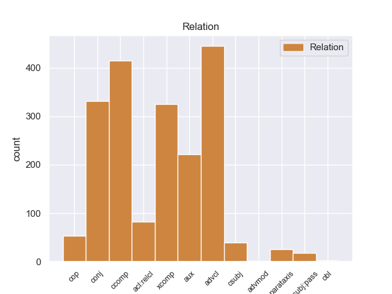
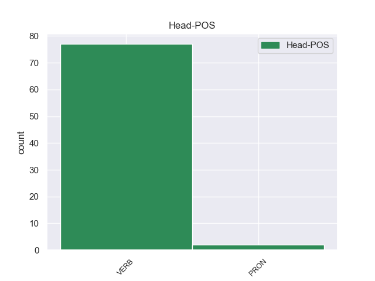

Distribution of features within this leaf



Agreement Rules sorted by frequency.
- When the dependent token is the conjunct(conj) of the head token,
1 Την _ _ _ _ 0 _ _ _
2 μεθεπομένη _ _ _ _ 0 _ _ _
3 σχημάτισε σχηματίζω VERB VERB Aspect=Perf|Mood=Ind|Number=Sing|Person=3|Tense=Past|VerbForm=Fin|Voice=Act 0 _ _ _
4 κυβέρνηση _ _ _ _ 0 _ _ _
5 ο _ _ _ _ 0 _ _ _
6 Δημήτριος _ _ _ _ 0 _ _ _
7 Ράλλης _ _ _ _ 0 _ _ _
8 , _ _ _ _ 0 _ _ _
9 παραιτήθηκε _ _ _ _ 0 _ _ _
10 ο _ _ _ _ 0 _ _ _
11 Κουντουριώτης _ _ _ _ 0 _ _ _
12 κι _ _ _ _ 0 _ _ _
13 έγινε γίνομαι VERB VERB Aspect=Perf|Mood=Ind|Number=Sing|Person=3|Tense=Past|VerbForm=Fin|Voice=Pass 3 conj _ _
14 αντιβασίλισσα _ _ _ _ 0 _ _ _
15 η _ _ _ _ 0 _ _ _
16 βασιλομήτωρ _ _ _ _ 0 _ _ _
17 Όλγα _ _ _ _ 0 _ _ _
18 μέχρι _ _ _ _ 0 _ _ _
19 να _ _ _ _ 0 _ _ _
20 γίνει _ _ _ _ 0 _ _ _
21 δημοψήφισμα _ _ _ _ 0 _ _ _
22 , _ _ _ _ 0 _ _ _
23 το _ _ _ _ 0 _ _ _
24 οποίο _ _ _ _ 0 _ _ _
25 θα _ _ _ _ 0 _ _ _
26 επανέφερε _ _ _ _ 0 _ _ _
27 τον _ _ _ _ 0 _ _ _
28 εξόριστο _ _ _ _ 0 _ _ _
29 Κωνσταντίνο _ _ _ _ 0 _ _ _
30 . _ _ _ _ 0 _ _ _
1 Την _ _ _ _ 0 _ _ _
2 μεθεπομένη _ _ _ _ 0 _ _ _
3 σχημάτισε _ _ _ _ 0 _ _ _
4 κυβέρνηση _ _ _ _ 0 _ _ _
5 ο _ _ _ _ 0 _ _ _
6 Δημήτριος _ _ _ _ 0 _ _ _
7 Ράλλης _ _ _ _ 0 _ _ _
8 , _ _ _ _ 0 _ _ _
9 παραιτήθηκε _ _ _ _ 0 _ _ _
10 ο _ _ _ _ 0 _ _ _
11 Κουντουριώτης _ _ _ _ 0 _ _ _
12 κι _ _ _ _ 0 _ _ _
13 έγινε _ _ _ _ 0 _ _ _
14 αντιβασίλισσα _ _ _ _ 0 _ _ _
15 η _ _ _ _ 0 _ _ _
16 βασιλομήτωρ _ _ _ _ 0 _ _ _
17 Όλγα _ _ _ _ 0 _ _ _
18 μέχρι _ _ _ _ 0 _ _ _
19 να _ _ _ _ 0 _ _ _
20 γίνει _ _ _ _ 0 _ _ _
21 δημοψήφισμα _ _ _ _ 0 _ _ _
22 , _ _ _ _ 0 _ _ _
23 το _ _ _ _ 0 _ _ _
24 οποίο οποίος PRON PRON Case=Nom|Gender=Neut|Number=Sing|Person=3|PronType=Rel 26 nsubj _ _
25 θα _ _ _ _ 0 _ _ _
26 επανέφερε επαναφέρω VERB VERB Aspect=Perf|Mood=Ind|Number=Sing|Person=3|Tense=Past|VerbForm=Fin|Voice=Act 0 _ _ _
27 τον _ _ _ _ 0 _ _ _
28 εξόριστο _ _ _ _ 0 _ _ _
29 Κωνσταντίνο _ _ _ _ 0 _ _ _
30 . _ _ _ _ 0 _ _ _
1 Όμως _ _ _ _ 0 _ _ _
2 , _ _ _ _ 0 _ _ _
3 ο _ _ _ _ 0 _ _ _
4 Υπουργός _ _ _ _ 0 _ _ _
5 Δικαιοσύνης _ _ _ _ 0 _ _ _
6 διαβίβασε διαβιβάζω VERB VERB Aspect=Perf|Mood=Ind|Number=Sing|Person=3|Tense=Past|VerbForm=Fin|Voice=Act 0 _ _ _
7 την _ _ _ _ 0 _ _ _
8 αίτηση _ _ _ _ 0 _ _ _
9 άρσης _ _ _ _ 0 _ _ _
10 της _ _ _ _ 0 _ _ _
11 ασυλίας _ _ _ _ 0 _ _ _
12 , _ _ _ _ 0 _ _ _
13 συνοδευόμενη _ _ _ _ 0 _ _ _
14 από _ _ _ _ 0 _ _ _
15 τις _ _ _ _ 0 _ _ _
16 διαβιβαστικές _ _ _ _ 0 _ _ _
17 επιστολές _ _ _ _ 0 _ _ _
18 τόσο _ _ _ _ 0 _ _ _
19 του _ _ _ _ 0 _ _ _
20 Εισαγγελέα _ _ _ _ 0 _ _ _
21 Πλημμελειοδικών _ _ _ _ 0 _ _ _
22 όσο _ _ _ _ 0 _ _ _
23 και _ _ _ _ 0 _ _ _
24 του _ _ _ _ 0 _ _ _
25 Εισαγγελέα _ _ _ _ 0 _ _ _
26 Εφετών _ _ _ _ 0 _ _ _
27 , _ _ _ _ 0 _ _ _
28 χωρίς _ _ _ _ 0 _ _ _
29 να _ _ _ _ 0 _ _ _
30 προβαίνει προβαίνω VERB VERB Aspect=Imp|Mood=Ind|Number=Sing|Person=3|Tense=Pres|VerbForm=Fin|Voice=Act 6 advcl _ _
31 σε _ _ _ _ 0 _ _ _
32 κανέναν _ _ _ _ 0 _ _ _
33 σχολιασμό _ _ _ _ 0 _ _ _
34 . _ _ _ _ 0 _ _ _
1 Τους _ _ _ _ 0 _ _ _
2 έγραφε _ _ _ _ 0 _ _ _
3 ότι _ _ _ _ 0 _ _ _
4 οι _ _ _ _ 0 _ _ _
5 επαναστάτες _ _ _ _ 0 _ _ _
6 θα _ _ _ _ 0 _ _ _
7 κρατούσαν _ _ _ _ 0 _ _ _
8 τις _ _ _ _ 0 _ _ _
9 θέσεις _ _ _ _ 0 _ _ _
10 τους _ _ _ _ 0 _ _ _
11 μέχρι _ _ _ _ 0 _ _ _
12 να _ _ _ _ 0 _ _ _
13 σκοτωθεί _ _ _ _ 0 _ _ _
14 κι _ _ _ _ 0 _ _ _
15 ο _ _ _ _ 0 _ _ _
16 τελευταίος _ _ _ _ 0 _ _ _
17 από _ _ _ _ 0 _ _ _
18 τις _ _ _ _ 0 _ _ _
19 οβίδες _ _ _ _ 0 _ _ _
20 των _ _ _ _ 0 _ _ _
21 ευρωπαϊκών _ _ _ _ 0 _ _ _
22 πολεμικών _ _ _ _ 0 _ _ _
23 προκειμένου _ _ _ _ 0 _ _ _
24 να _ _ _ _ 0 _ _ _
25 μην _ _ _ _ 0 _ _ _
26 αφήσουν αφήνω VERB VERB Aspect=Perf|Mood=Ind|Number=Plur|Person=3|VerbForm=Fin|Voice=Act 0 _ _ _
27 τους _ _ _ _ 0 _ _ _
28 Τούρκους _ _ _ _ 0 _ _ _
29 να _ _ _ _ 0 _ _ _
30 πάρουν παίρνω VERB VERB Aspect=Perf|Mood=Ind|Number=Plur|Person=3|VerbForm=Fin|Voice=Act 26 xcomp _ _
31 το _ _ _ _ 0 _ _ _
32 Ακρωτήρι _ _ _ _ 0 _ _ _
33 . _ _ _ _ 0 _ _ _
1 Από _ _ _ _ 0 _ _ _
2 πολλές _ _ _ _ 0 _ _ _
3 συνομιλίες _ _ _ _ 0 _ _ _
4 με _ _ _ _ 0 _ _ _
5 εκπροσώπους _ _ _ _ 0 _ _ _
6 του _ _ _ _ 0 _ _ _
7 κλάδου _ _ _ _ 0 _ _ _
8 διαπιστώσαμε _ _ _ _ 0 _ _ _
9 όμως _ _ _ _ 0 _ _ _
10 επίσης _ _ _ _ 0 _ _ _
11 ότι _ _ _ _ 0 _ _ _
12 η _ _ _ _ 0 _ _ _
13 έλλειψη _ _ _ _ 0 _ _ _
14 εργατικού _ _ _ _ 0 _ _ _
15 δυναμικού _ _ _ _ 0 _ _ _
16 δεν _ _ _ _ 0 _ _ _
17 πρέπει πρέπει AUX AUX Aspect=Imp|Mood=Ind|Number=Sing|Person=3|Tense=Pres|VerbForm=Fin|Voice=Act 19 aux _ _
18 να _ _ _ _ 0 _ _ _
19 έχει έχω VERB VERB Aspect=Imp|Mood=Ind|Number=Sing|Person=3|Tense=Pres|VerbForm=Fin|Voice=Act 0 _ _ _
20 ως _ _ _ _ 0 _ _ _
21 αποτέλεσμα _ _ _ _ 0 _ _ _
22 να _ _ _ _ 0 _ _ _
23 λειτουργήσει _ _ _ _ 0 _ _ _
24 εδώ _ _ _ _ 0 _ _ _
25 ανασταλτικά _ _ _ _ 0 _ _ _
26 η _ _ _ _ 0 _ _ _
27 παρούσα _ _ _ _ 0 _ _ _
28 οδηγία _ _ _ _ 0 _ _ _
29 . _ _ _ _ 0 _ _ _
1 Το _ _ _ _ 0 _ _ _
2 ταπεινό _ _ _ _ 0 _ _ _
3 τέμενος _ _ _ _ 0 _ _ _
4 δεν _ _ _ _ 0 _ _ _
5 συγκρίνεται _ _ _ _ 0 _ _ _
6 με _ _ _ _ 0 _ _ _
7 το _ _ _ _ 0 _ _ _
8 παλάτι _ _ _ _ 0 _ _ _
9 του _ _ _ _ 0 _ _ _
10 Μπαχτσισαράι _ _ _ _ 0 _ _ _
11 , _ _ _ _ 0 _ _ _
12 την _ _ _ _ 0 _ _ _
13 έδρα _ _ _ _ 0 _ _ _
14 του _ _ _ _ 0 _ _ _
15 Κριμαϊκού _ _ _ _ 0 _ _ _
16 Χανάτου _ _ _ _ 0 _ _ _
17 , _ _ _ _ 0 _ _ _
18 το _ _ _ _ 0 _ _ _
19 οποίο οποίος PRON PRON Case=Acc|Gender=Neut|Number=Sing|Person=3|PronType=Rel 20 obj _ _
20 αποθανάτισε απαθανατίζω VERB VERB Aspect=Perf|Mood=Ind|Number=Sing|Person=3|Tense=Past|VerbForm=Fin|Voice=Act 0 _ _ _
21 σ _ _ _ _ 0 _ _ _
22 την _ _ _ _ 0 _ _ _
23 ποίησή _ _ _ _ 0 _ _ _
24 του _ _ _ _ 0 _ _ _
25 ο _ _ _ _ 0 _ _ _
26 Αλεξάντερ _ _ _ _ 0 _ _ _
27 Πούσκιν _ _ _ _ 0 _ _ _
28 , _ _ _ _ 0 _ _ _
29 και _ _ _ _ 0 _ _ _
30 το _ _ _ _ 0 _ _ _
31 οποίο _ _ _ _ 0 _ _ _
32 έπεσε _ _ _ _ 0 _ _ _
33 σ _ _ _ _ 0 _ _ _
34 τα _ _ _ _ 0 _ _ _
35 χέρια _ _ _ _ 0 _ _ _
36 της _ _ _ _ 0 _ _ _
37 αυτοκρατορικής _ _ _ _ 0 _ _ _
38 Ρωσίας _ _ _ _ 0 _ _ _
39 το _ _ _ _ 0 _ _ _
40 18ο _ _ _ _ 0 _ _ _
41 αιώνα _ _ _ _ 0 _ _ _
42 . _ _ _ _ 0 _ _ _
1 Τους _ _ _ _ 0 _ _ _
2 έγραφε γράφω VERB VERB Aspect=Imp|Mood=Ind|Number=Sing|Person=3|Tense=Past|VerbForm=Fin|Voice=Act 0 _ _ _
3 ότι _ _ _ _ 0 _ _ _
4 οι _ _ _ _ 0 _ _ _
5 επαναστάτες _ _ _ _ 0 _ _ _
6 θα _ _ _ _ 0 _ _ _
7 κρατούσαν κρατώ VERB VERB Aspect=Perf|Mood=Ind|Number=Plur|Person=3|Tense=Past|VerbForm=Fin|Voice=Act 2 ccomp _ _
8 τις _ _ _ _ 0 _ _ _
9 θέσεις _ _ _ _ 0 _ _ _
10 τους _ _ _ _ 0 _ _ _
11 μέχρι _ _ _ _ 0 _ _ _
12 να _ _ _ _ 0 _ _ _
13 σκοτωθεί _ _ _ _ 0 _ _ _
14 κι _ _ _ _ 0 _ _ _
15 ο _ _ _ _ 0 _ _ _
16 τελευταίος _ _ _ _ 0 _ _ _
17 από _ _ _ _ 0 _ _ _
18 τις _ _ _ _ 0 _ _ _
19 οβίδες _ _ _ _ 0 _ _ _
20 των _ _ _ _ 0 _ _ _
21 ευρωπαϊκών _ _ _ _ 0 _ _ _
22 πολεμικών _ _ _ _ 0 _ _ _
23 προκειμένου _ _ _ _ 0 _ _ _
24 να _ _ _ _ 0 _ _ _
25 μην _ _ _ _ 0 _ _ _
26 αφήσουν _ _ _ _ 0 _ _ _
27 τους _ _ _ _ 0 _ _ _
28 Τούρκους _ _ _ _ 0 _ _ _
29 να _ _ _ _ 0 _ _ _
30 πάρουν _ _ _ _ 0 _ _ _
31 το _ _ _ _ 0 _ _ _
32 Ακρωτήρι _ _ _ _ 0 _ _ _
33 . _ _ _ _ 0 _ _ _
1 Σ _ _ _ _ 0 _ _ _
2 την _ _ _ _ 0 _ _ _
3 Αλγερία _ _ _ _ 0 _ _ _
4 , _ _ _ _ 0 _ _ _
5 ένοπλοι _ _ _ _ 0 _ _ _
6 Ισλαμιστές _ _ _ _ 0 _ _ _
7 που που PRON PRON Case=Nom|Gender=Masc|Number=Plur|Person=3|PronType=Rel 8 nsubj:pass _ _
8 συνδέονται συνδέω VERB VERB Aspect=Imp|Mood=Ind|Number=Plur|Person=3|Tense=Pres|VerbForm=Fin|Voice=Pass 0 _ _ _
9 με _ _ _ _ 0 _ _ _
10 την _ _ _ _ 0 _ _ _
11 Αλ _ _ _ _ 0 _ _ _
12 Κάιντα _ _ _ _ 0 _ _ _
13 , _ _ _ _ 0 _ _ _
14 απήγαγαν _ _ _ _ 0 _ _ _
15 41 _ _ _ _ 0 _ _ _
16 άτομα _ _ _ _ 0 _ _ _
17 που _ _ _ _ 0 _ _ _
18 εργάζονταν _ _ _ _ 0 _ _ _
19 σε _ _ _ _ 0 _ _ _
20 εργοστασιακό _ _ _ _ 0 _ _ _
21 συγκρότημα _ _ _ _ 0 _ _ _
22 φυσικού _ _ _ _ 0 _ _ _
23 αερίου _ _ _ _ 0 _ _ _
24 σ _ _ _ _ 0 _ _ _
25 την _ _ _ _ 0 _ _ _
26 περιοχή _ _ _ _ 0 _ _ _
27 ως _ _ _ _ 0 _ _ _
28 απάντηση _ _ _ _ 0 _ _ _
29 σ _ _ _ _ 0 _ _ _
30 τις _ _ _ _ 0 _ _ _
31 στρατιωτικές _ _ _ _ 0 _ _ _
32 επιχειρήσεις _ _ _ _ 0 _ _ _
33 που _ _ _ _ 0 _ _ _
34 πραγματοποιεί _ _ _ _ 0 _ _ _
35 η _ _ _ _ 0 _ _ _
36 Γαλλία _ _ _ _ 0 _ _ _
37 σ _ _ _ _ 0 _ _ _
38 το _ _ _ _ 0 _ _ _
39 Μάλι _ _ _ _ 0 _ _ _
40 . _ _ _ _ 0 _ _ _
1 Οι _ _ _ _ 0 _ _ _
2 οδηγίες _ _ _ _ 0 _ _ _
3 οφείλουν _ _ _ _ 0 _ _ _
4 , _ _ _ _ 0 _ _ _
5 όπως _ _ _ _ 0 _ _ _
6 αναφέρθηκε _ _ _ _ 0 _ _ _
7 , _ _ _ _ 0 _ _ _
8 να _ _ _ _ 0 _ _ _
9 συμφωνούν συμφωνώ VERB VERB Aspect=Imp|Mood=Ind|Number=Plur|Person=3|Tense=Pres|VerbForm=Fin|Voice=Act 0 _ _ _
10 μεταξύ _ _ _ _ 0 _ _ _
11 τους εγώ PRON PRON Case=Gen|Gender=Fem|Number=Plur|Person=3|PronType=Prs 9 obl _ SpaceAfter=No
12 . _ _ _ _ 0 _ _ _
1 Αναμένεται αναμένω VERB VERB Aspect=Imp|Mood=Ind|Number=Sing|Person=3|Tense=Pres|VerbForm=Fin|Voice=Pass 0 _ _ _
2 ότι _ _ _ _ 0 _ _ _
3 ο _ _ _ _ 0 _ _ _
4 Πρόεδρος _ _ _ _ 0 _ _ _
5 Ομπάμα _ _ _ _ 0 _ _ _
6 θα _ _ _ _ 0 _ _ _
7 επικοινωνήσει επικοινωνώ VERB VERB Aspect=Perf|Mood=Ind|Number=Sing|Person=3|VerbForm=Fin|Voice=Act 1 csubj:pass _ _
8 τηλεφωνικά _ _ _ _ 0 _ _ _
9 με _ _ _ _ 0 _ _ _
10 το _ _ _ _ 0 _ _ _
11 ρώσο _ _ _ _ 0 _ _ _
12 ομόλογό _ _ _ _ 0 _ _ _
13 του _ _ _ _ 0 _ _ _
14 για _ _ _ _ 0 _ _ _
15 το _ _ _ _ 0 _ _ _
16 θέμα _ _ _ _ 0 _ _ _
17 . _ _ _ _ 0 _ _ _
1 Αυτή αυτός PRON PRON Case=Nom|Gender=Fem|Number=Sing|Person=3|PronType=Dem 0 _ _ _
2 είναι είμαι AUX AUX Aspect=Imp|Mood=Ind|Number=Sing|Person=3|Tense=Pres|VerbForm=Fin|Voice=Pass 1 cop _ _
3 η _ _ _ _ 0 _ _ _
4 κατάσταση _ _ _ _ 0 _ _ _
5 επί _ _ _ _ 0 _ _ _
6 της _ _ _ _ 0 _ _ _
7 οποίας _ _ _ _ 0 _ _ _
8 πρέπει _ _ _ _ 0 _ _ _
9 να _ _ _ _ 0 _ _ _
10 αποφασίσουμε _ _ _ _ 0 _ _ _
11 . _ _ _ _ 0 _ _ _
Disagree Examples:
1 Κυρία _ _ _ _ 0 _ _ _
2 Πρόεδρε _ _ _ _ 0 _ _ _
3 , _ _ _ _ 0 _ _ _
4 καλωσορίζουμε _ _ _ _ 0 _ _ _
5 αυτή _ _ _ _ 0 _ _ _
6 την _ _ _ _ 0 _ _ _
7 πρωτοβουλία _ _ _ _ 0 _ _ _
8 ως _ _ _ _ 0 _ _ _
9 ένα _ _ _ _ 0 _ _ _
10 ακόμα _ _ _ _ 0 _ _ _
11 μικρό _ _ _ _ 0 _ _ _
12 βήμα _ _ _ _ 0 _ _ _
13 σ _ _ _ _ 0 _ _ _
14 την _ _ _ _ 0 _ _ _
15 πορεία _ _ _ _ 0 _ _ _
16 προς _ _ _ _ 0 _ _ _
17 την _ _ _ _ 0 _ _ _
18 εκπλήρωση _ _ _ _ 0 _ _ _
19 της _ _ _ _ 0 _ _ _
20 εντολής _ _ _ _ 0 _ _ _
21 που που PRON PRON Case=Acc|Gender=Fem|Number=Sing|Person=3|PronType=Rel 22 obj _ _
22 λάβαμε λαμβάνω VERB VERB Aspect=Perf|Mood=Ind|Number=Plur|Person=1|Tense=Past|VerbForm=Fin|Voice=Act 0 _ _ _
23 σ _ _ _ _ 0 _ _ _
24 τη _ _ _ _ 0 _ _ _
25 Σύνοδο _ _ _ _ 0 _ _ _
26 του _ _ _ _ 0 _ _ _
27 Τάμπερε _ _ _ _ 0 _ _ _
28 να _ _ _ _ 0 _ _ _
29 καταστήσουμε _ _ _ _ 0 _ _ _
30 την _ _ _ _ 0 _ _ _
31 αρχή _ _ _ _ 0 _ _ _
32 της _ _ _ _ 0 _ _ _
33 αμοιβαίας _ _ _ _ 0 _ _ _
34 αναγνώρισης _ _ _ _ 0 _ _ _
35 ακρογωνιαίο _ _ _ _ 0 _ _ _
36 λίθο _ _ _ _ 0 _ _ _
37 της _ _ _ _ 0 _ _ _
38 δικαστικής _ _ _ _ 0 _ _ _
39 συνεργασίας _ _ _ _ 0 _ _ _
40 . _ _ _ _ 0 _ _ _
1 Αποτελεί αποτελώ VERB VERB Aspect=Imp|Mood=Ind|Number=Sing|Person=3|Tense=Pres|VerbForm=Fin|Voice=Act 0 _ _ _
2 πρόκληση _ _ _ _ 0 _ _ _
3 για _ _ _ _ 0 _ _ _
4 όλους _ _ _ _ 0 _ _ _
5 εμάς εγώ PRON PRON Case=Acc|Gender=Masc|Number=Plur|Person=1|PronType=Prs 1 obl _ _
6 - _ _ _ _ 0 _ _ _
7 το _ _ _ _ 0 _ _ _
8 Κοινοβούλιο _ _ _ _ 0 _ _ _
9 , _ _ _ _ 0 _ _ _
10 την _ _ _ _ 0 _ _ _
11 Επιτροπή _ _ _ _ 0 _ _ _
12 και _ _ _ _ 0 _ _ _
13 το _ _ _ _ 0 _ _ _
14 Συμβούλιο _ _ _ _ 0 _ _ _
15 - _ _ _ _ 0 _ _ _
16 να _ _ _ _ 0 _ _ _
17 θεσπίσουμε _ _ _ _ 0 _ _ _
18 αυτά _ _ _ _ 0 _ _ _
19 τα _ _ _ _ 0 _ _ _
20 εχέγγυα _ _ _ _ 0 _ _ _
21 , _ _ _ _ 0 _ _ _
22 διότι _ _ _ _ 0 _ _ _
23 είναι _ _ _ _ 0 _ _ _
24 δύσκολο _ _ _ _ 0 _ _ _
25 να _ _ _ _ 0 _ _ _
26 εξακολουθήσουμε _ _ _ _ 0 _ _ _
27 να _ _ _ _ 0 _ _ _
28 συμφωνούμε _ _ _ _ 0 _ _ _
29 ώσπου _ _ _ _ 0 _ _ _
30 να _ _ _ _ 0 _ _ _
31 τα _ _ _ _ 0 _ _ _
32 αποκτήσουμε _ _ _ _ 0 _ _ _
33 . _ _ _ _ 0 _ _ _
1 Αποτελεί αποτελώ VERB VERB Aspect=Imp|Mood=Ind|Number=Sing|Person=3|Tense=Pres|VerbForm=Fin|Voice=Act 0 _ _ _
2 πρόκληση _ _ _ _ 0 _ _ _
3 για _ _ _ _ 0 _ _ _
4 όλους _ _ _ _ 0 _ _ _
5 εμάς _ _ _ _ 0 _ _ _
6 - _ _ _ _ 0 _ _ _
7 το _ _ _ _ 0 _ _ _
8 Κοινοβούλιο _ _ _ _ 0 _ _ _
9 , _ _ _ _ 0 _ _ _
10 την _ _ _ _ 0 _ _ _
11 Επιτροπή _ _ _ _ 0 _ _ _
12 και _ _ _ _ 0 _ _ _
13 το _ _ _ _ 0 _ _ _
14 Συμβούλιο _ _ _ _ 0 _ _ _
15 - _ _ _ _ 0 _ _ _
16 να _ _ _ _ 0 _ _ _
17 θεσπίσουμε θεσπίζω VERB VERB Aspect=Perf|Mood=Ind|Number=Plur|Person=1|VerbForm=Fin|Voice=Act 1 csubj _ _
18 αυτά _ _ _ _ 0 _ _ _
19 τα _ _ _ _ 0 _ _ _
20 εχέγγυα _ _ _ _ 0 _ _ _
21 , _ _ _ _ 0 _ _ _
22 διότι _ _ _ _ 0 _ _ _
23 είναι _ _ _ _ 0 _ _ _
24 δύσκολο _ _ _ _ 0 _ _ _
25 να _ _ _ _ 0 _ _ _
26 εξακολουθήσουμε _ _ _ _ 0 _ _ _
27 να _ _ _ _ 0 _ _ _
28 συμφωνούμε _ _ _ _ 0 _ _ _
29 ώσπου _ _ _ _ 0 _ _ _
30 να _ _ _ _ 0 _ _ _
31 τα _ _ _ _ 0 _ _ _
32 αποκτήσουμε _ _ _ _ 0 _ _ _
33 . _ _ _ _ 0 _ _ _
1 Αποτελεί _ _ _ _ 0 _ _ _
2 πρόκληση _ _ _ _ 0 _ _ _
3 για _ _ _ _ 0 _ _ _
4 όλους _ _ _ _ 0 _ _ _
5 εμάς _ _ _ _ 0 _ _ _
6 - _ _ _ _ 0 _ _ _
7 το _ _ _ _ 0 _ _ _
8 Κοινοβούλιο _ _ _ _ 0 _ _ _
9 , _ _ _ _ 0 _ _ _
10 την _ _ _ _ 0 _ _ _
11 Επιτροπή _ _ _ _ 0 _ _ _
12 και _ _ _ _ 0 _ _ _
13 το _ _ _ _ 0 _ _ _
14 Συμβούλιο _ _ _ _ 0 _ _ _
15 - _ _ _ _ 0 _ _ _
16 να _ _ _ _ 0 _ _ _
17 θεσπίσουμε _ _ _ _ 0 _ _ _
18 αυτά _ _ _ _ 0 _ _ _
19 τα _ _ _ _ 0 _ _ _
20 εχέγγυα _ _ _ _ 0 _ _ _
21 , _ _ _ _ 0 _ _ _
22 διότι _ _ _ _ 0 _ _ _
23 είναι _ _ _ _ 0 _ _ _
24 δύσκολο _ _ _ _ 0 _ _ _
25 να _ _ _ _ 0 _ _ _
26 εξακολουθήσουμε _ _ _ _ 0 _ _ _
27 να _ _ _ _ 0 _ _ _
28 συμφωνούμε _ _ _ _ 0 _ _ _
29 ώσπου _ _ _ _ 0 _ _ _
30 να _ _ _ _ 0 _ _ _
31 τα εγώ PRON PRON Case=Acc|Gender=Neut|Number=Plur|Person=3|PronType=Prs 32 obj _ _
32 αποκτήσουμε αποκτώ VERB VERB Aspect=Perf|Mood=Ind|Number=Plur|Person=1|VerbForm=Fin|Voice=Act 0 _ _ _
33 . _ _ _ _ 0 _ _ _
1 Ωστόσο _ _ _ _ 0 _ _ _
2 , _ _ _ _ 0 _ _ _
3 η _ _ _ _ 0 _ _ _
4 Ομάδα _ _ _ _ 0 _ _ _
5 μου _ _ _ _ 0 _ _ _
6 πιστεύει _ _ _ _ 0 _ _ _
7 πως _ _ _ _ 0 _ _ _
8 , _ _ _ _ 0 _ _ _
9 παρόλο _ _ _ _ 0 _ _ _
10 που _ _ _ _ 0 _ _ _
11 οι _ _ _ _ 0 _ _ _
12 ευρωσκεπτικιστές _ _ _ _ 0 _ _ _
13 της _ _ _ _ 0 _ _ _
14 δεξιάς _ _ _ _ 0 _ _ _
15 ενίστανται ενίσταμαι VERB VERB Aspect=Imp|Mood=Ind|Number=Plur|Person=3|Tense=Pres|VerbForm=Fin|Voice=Pass 43 advcl _ _
16 σε _ _ _ _ 0 _ _ _
17 οποιαδήποτε _ _ _ _ 0 _ _ _
18 συνεργασία _ _ _ _ 0 _ _ _
19 σε _ _ _ _ 0 _ _ _
20 αυτόν _ _ _ _ 0 _ _ _
21 τον _ _ _ _ 0 _ _ _
22 τομέα _ _ _ _ 0 _ _ _
23 , _ _ _ _ 0 _ _ _
24 όσοι _ _ _ _ 0 _ _ _
25 από _ _ _ _ 0 _ _ _
26 εμάς _ _ _ _ 0 _ _ _
27 δεν _ _ _ _ 0 _ _ _
28 ανήκουμε _ _ _ _ 0 _ _ _
29 σ _ _ _ _ 0 _ _ _
30 την _ _ _ _ 0 _ _ _
31 δεξιά _ _ _ _ 0 _ _ _
32 και _ _ _ _ 0 _ _ _
33 ενδιαφερόμαστε _ _ _ _ 0 _ _ _
34 για _ _ _ _ 0 _ _ _
35 τις _ _ _ _ 0 _ _ _
36 ατομικές _ _ _ _ 0 _ _ _
37 ελευθερίες _ _ _ _ 0 _ _ _
38 , _ _ _ _ 0 _ _ _
39 θα _ _ _ _ 0 _ _ _
40 πρέπει _ _ _ _ 0 _ _ _
41 μεν _ _ _ _ 0 _ _ _
42 να _ _ _ _ 0 _ _ _
43 συμφωνήσουμε συμφωνώ VERB VERB Aspect=Perf|Mood=Ind|Number=Plur|Person=1|VerbForm=Fin|Voice=Act 0 _ _ _
44 σε _ _ _ _ 0 _ _ _
45 αυτά _ _ _ _ 0 _ _ _
46 τα _ _ _ _ 0 _ _ _
47 μέτρα _ _ _ _ 0 _ _ _
48 , _ _ _ _ 0 _ _ _
49 αλλά _ _ _ _ 0 _ _ _
50 σ _ _ _ _ 0 _ _ _
51 τη _ _ _ _ 0 _ _ _
52 συνέχεια _ _ _ _ 0 _ _ _
53 θα _ _ _ _ 0 _ _ _
54 πρέπει _ _ _ _ 0 _ _ _
55 να _ _ _ _ 0 _ _ _
56 ασκήσουμε _ _ _ _ 0 _ _ _
57 πίεση _ _ _ _ 0 _ _ _
58 σ _ _ _ _ 0 _ _ _
59 την _ _ _ _ 0 _ _ _
60 Επιτροπή _ _ _ _ 0 _ _ _
61 και _ _ _ _ 0 _ _ _
62 σ _ _ _ _ 0 _ _ _
63 το _ _ _ _ 0 _ _ _
64 Συμβούλιο _ _ _ _ 0 _ _ _
65 ώστε _ _ _ _ 0 _ _ _
66 να _ _ _ _ 0 _ _ _
67 επιτύχουμε _ _ _ _ 0 _ _ _
68 τη _ _ _ _ 0 _ _ _
69 θέσπιση _ _ _ _ 0 _ _ _
70 αυτών _ _ _ _ 0 _ _ _
71 των _ _ _ _ 0 _ _ _
72 εχεγγύων _ _ _ _ 0 _ _ _
73 των _ _ _ _ 0 _ _ _
74 πολιτών _ _ _ _ 0 _ _ _
75 . _ _ _ _ 0 _ _ _